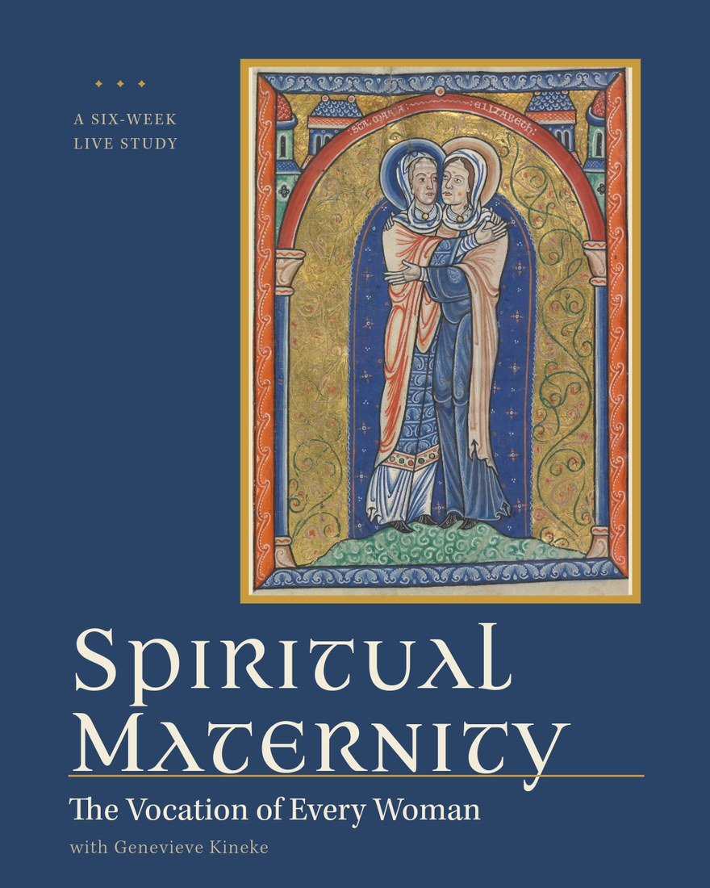

1
The Claim
You Are Already a Spiritual Mother
What spiritual maternity is, and why both the culture and the parish manage to obscure it.
✦ ✦ ✦Tota pulchra es, Maria✦ ✦ ✦
A Six-Week Live Study · This Fall
Not someday. Not if you had married, or married differently, or had the children you wanted. Now. Spiritual maternity is the vocation of every woman, and almost nobody has told you so.

“Woman naturally seeks to embrace that which is living, personal, and whole. To cherish, guard, protect, nourish and advance growth is her natural, maternal yearning.”
St. Teresa Benedicta of the Cross · Essays on Woman
Ask a room of Catholic women who the mothers are, and the hands that go up belong to the women with children at home.
That is how the parish speaks, and it is how the culture speaks, though for opposite reasons. The parish reserves motherhood for the women raising children and then falls quiet about everyone else: the single woman, the widow, the woman whose children are grown and gone, the woman who wanted children and never had them. The culture goes further and treats motherhood as one lifestyle among many, a thing you opt into or decline.
Both accounts are too small. The Church has always taught something wider and stranger: that maternity is not only a biological event but a way of standing toward other people. It can be exercised by a woman of seventy with no children, and it is not a consolation prize for the ones who missed the real thing. It is the vocation itself.
Over six weeks we are going to take that claim seriously and follow it all the way down: what it asks of you, where it is fed, what happens when it is wounded, and what it looks like in an ordinary week in your own parish, your own family, your own street.
Each session runs about an hour: teaching, Scripture, and real discussion. You will not be lectured at for sixty minutes.
The Claim
What spiritual maternity is, and why both the culture and the parish manage to obscure it.
The Cost
The temptations that come with this vocation, and the three commitments that hold it steady.
The Model
What we learn about our own vocation from the two mothers we were given: how to make a safe place for souls, and how to be a bridge to the world outside.
Where It Is Fed
Baptism washes, the Eucharist feeds, Confirmation sends. The same three motions belong to every spiritual mother, and none of them can be sustained on willpower.
When It Is Wounded
Every woman who has mothered anyone has been wounded doing it. Reconciliation forgives; Anointing tends. This is the session for the grief you have not known where to put.
The Sending
You will not do all of this at once, and you are not meant to. The last session is discernment: choosing one or two of the tasks of mothering to carry into the year ahead, out loud, with the other women in the room.
Author · Columnist · Host of the House of Gold Podcast
Genevieve has spent two decades on one question: what the Church actually means when she speaks about woman. She is the author of The Authentic Catholic Woman, has written a syndicated column since 2009, and has taught this material on EWTN and Relevant Radio and in parish halls where the coffee was bad and the conversation was not.
This course is the argument she has been circling the longest, taught live for the first time.
Weekday evenings, because most of the women we are building this for are still working. A daytime study excludes the woman we most want in the room.
When
Autumn
2026
Six weekly sessions
Time
7:30 pm
Eastern · about an hour
Where
Zoom
Live, not recorded lectures
Cost
$99
Capped at 25 women
Exact dates are announced with registration in August. Because the group is capped, the waitlist hears first.
Registration opens in August
Leave your name and we will write to you the day registration opens, before it goes out to anyone else.
One email when registration opens, and nothing else you did not ask for. Unsubscribe whenever you like.